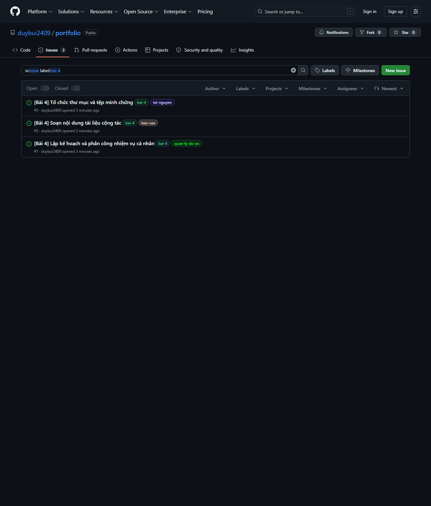
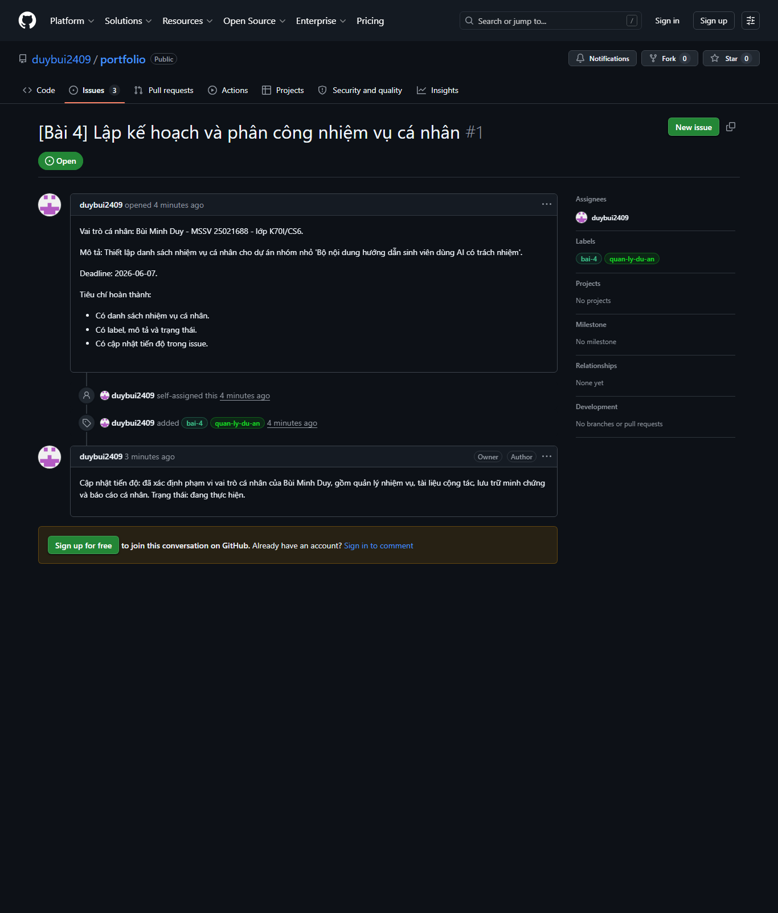
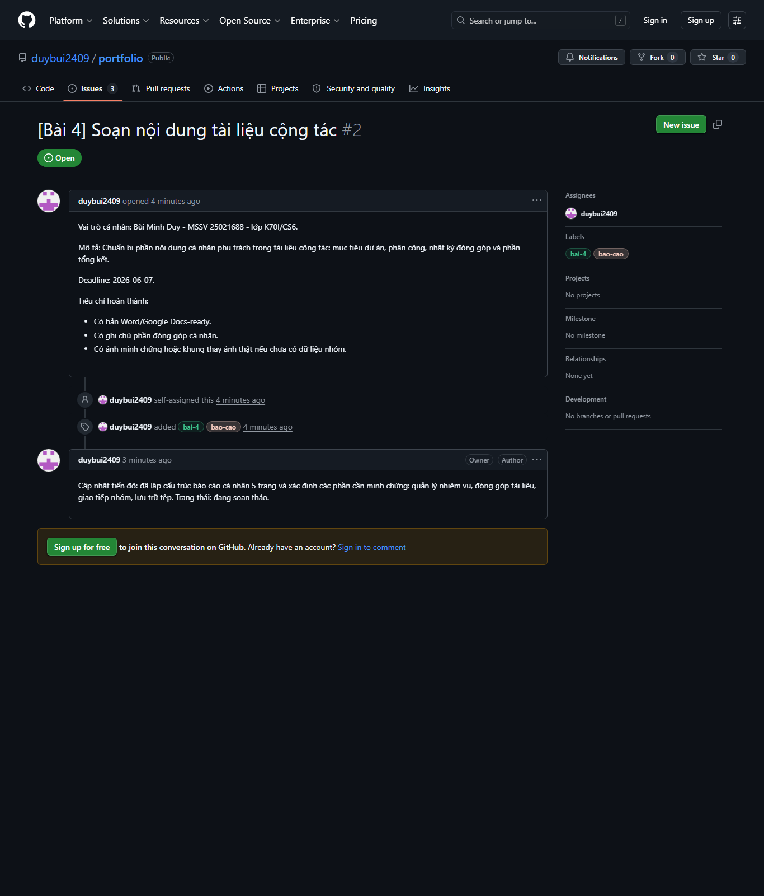
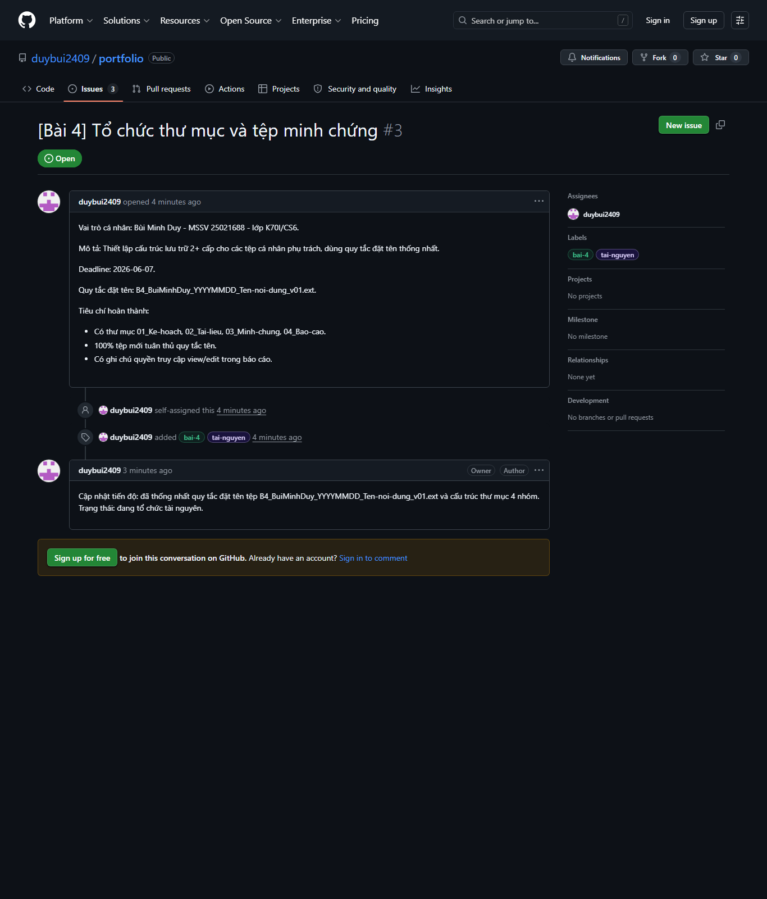
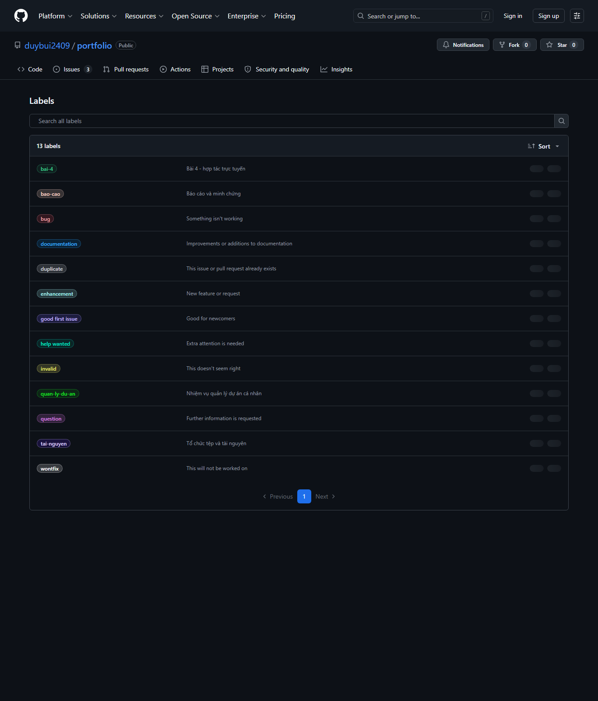
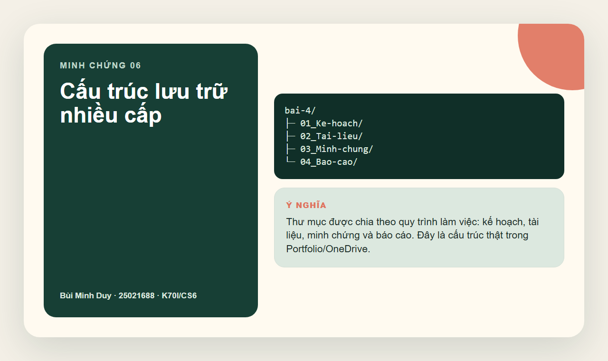
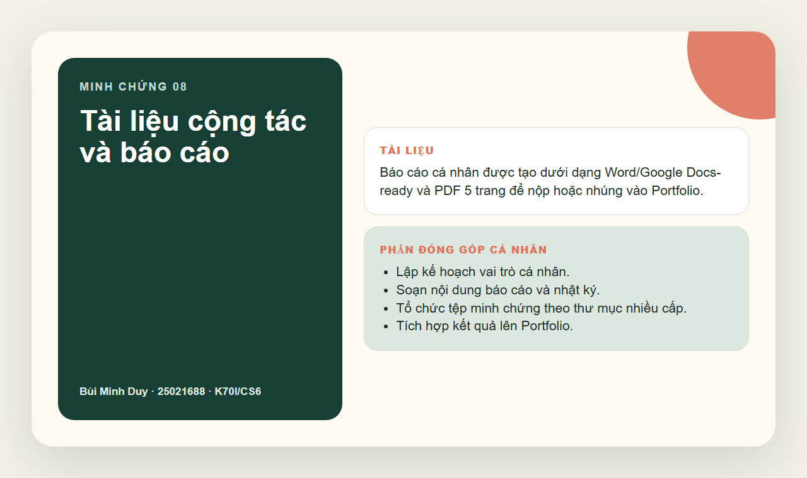
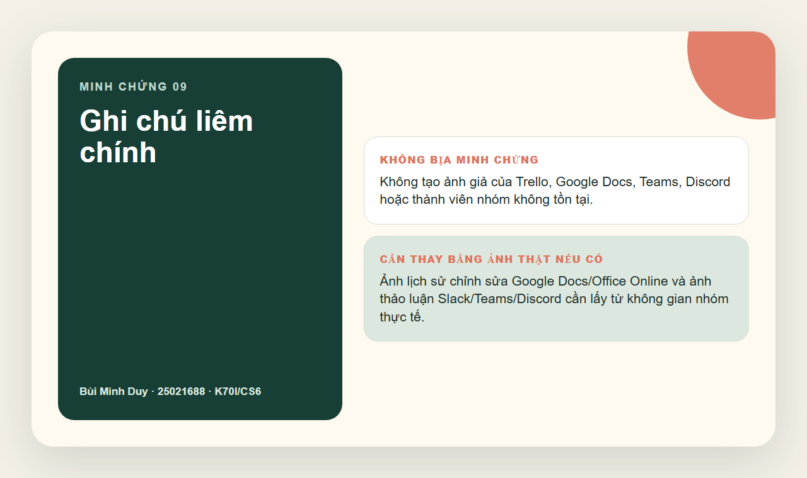

Quản lý dự án
GitHub Issues có assignee, label, mô tả nhiệm vụ và comment cập nhật.
Bài tập 4 · Portfolio cá nhân
Báo cáo vai trò cá nhân trong dự án nhỏ “Bộ nội dung hướng dẫn sinh viên sử dụng AI có trách nhiệm”, tập trung vào nhiệm vụ, tài liệu, lưu trữ tệp và minh chứng làm việc.
01 / Tổng quan
Bài làm dùng minh chứng thật từ GitHub Issues, cấu trúc lưu trữ trong Portfolio/OneDrive và báo cáo PDF/Word 5 trang.
GitHub Issues có assignee, label, mô tả nhiệm vụ và comment cập nhật.
Báo cáo Word/Google Docs-ready và PDF 5 trang.
Thư mục nhiều cấp, quy tắc đặt tên thống nhất, tài nguyên tải về.
Issue comments dùng để ghi cập nhật, điều phối và trạng thái công việc.
02 / Nhiệm vụ cá nhân
03 / Nhật ký minh chứng








04 / Phân tích cá nhân
Không bịa ảnh Trello, Google Docs hay Teams. Chỉ dùng minh chứng thật và ghi rõ phần cần thay bằng ảnh nhóm thực tế.
Dùng Portfolio làm nơi tổng hợp, còn GitHub Issues quản lý nhiệm vụ và OneDrive/GitHub lưu tệp theo cấu trúc nhiều cấp.
Dùng comment trong issue để ghi cập nhật ngắn có timestamp, giúp người khác biết việc nào đã làm và việc nào còn thiếu.
06 / Liêm chính học thuật
Bài làm này sử dụng dữ liệu thật từ GitHub Issues, file trong Portfolio/OneDrive và báo cáo được tạo ngày 07/06/2026. Những ảnh yêu cầu không gian nhóm thật như Trello, Google Docs history hoặc Teams/Discord cần thay bằng ảnh chụp trực tiếp nếu nhóm có sử dụng các công cụ đó.
Cách trình bày này bảo vệ tính trung thực: không tự tạo thành viên, không dựng lịch sử chỉnh sửa giả và không bịa hội thoại.